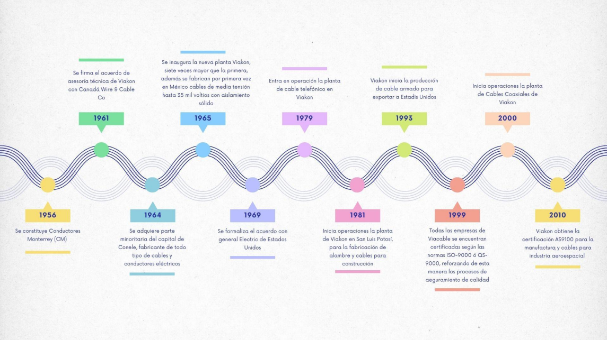
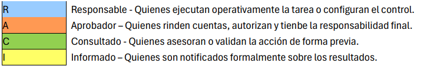
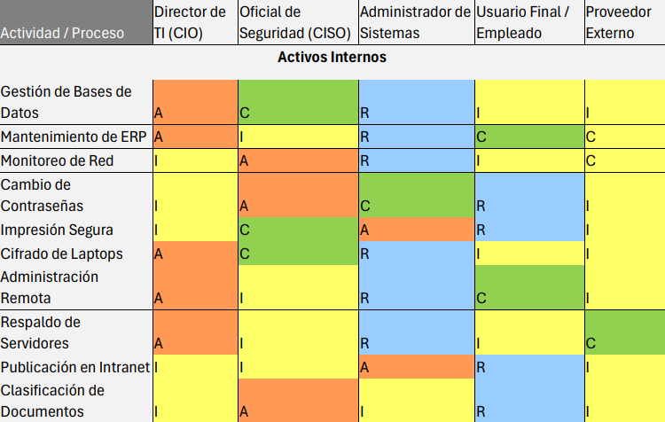
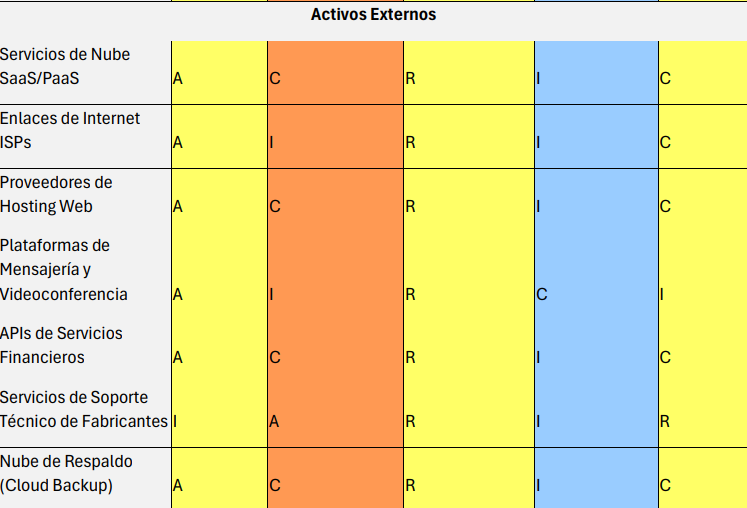
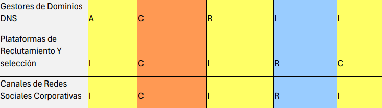
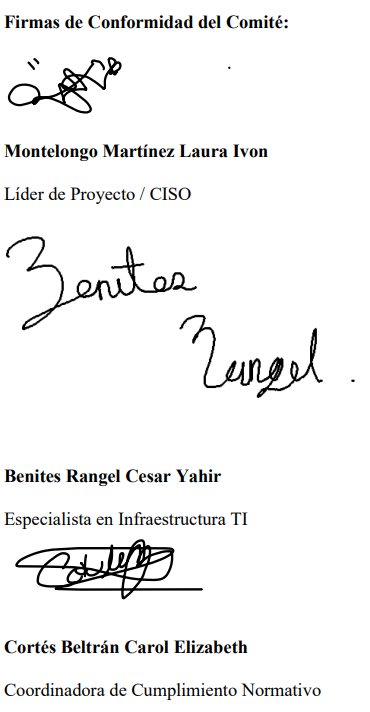
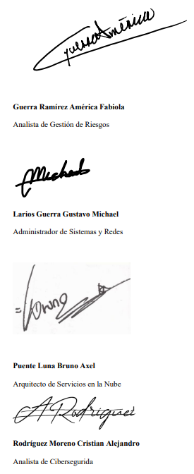
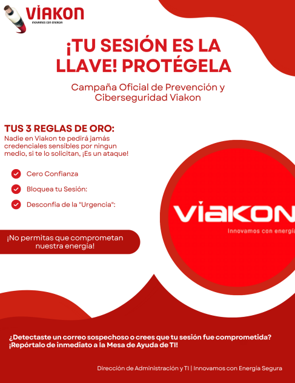

PR03 - Sistema de Gestión de Seguridad de la Información (SGSI)
Materia: Seguridad Informática | Proyecto: Implementación SGSI ISO/IEC 27001 | Empresa: Viakon | Equipo: 3
SECCIÓN 1 - Alcance
Objetivo del alcance
El propósito de este Sistema de Gestión de Seguridad de la Información (SGSI) es establecer los requisitos críticos para la protección de los activos de información gestionados por las direcciones del área de administración y TI.
Este alcance garantiza que el tratamiento de la información de los "Energizadores" cumpla con los pilares de Confidencialidad, Integridad y Disponibilidad, mitigando riesgos asociados al manejo de datos personales sensibles, registros financieros y bases de datos de los activos.
Ámbito de Aplicación
La aplicación de los requisitos de esta área se extiende a los siguientes procesos operativos y estratégicos:
- Gestión de datos maestros de activos.
- Gestión financiera y contable.
- Control documental y normativo.
- Seguridad física y control de accesos.
- Infraestructura tecnológica.
- Protección de bases de datos.
- Servicios de nube y respaldos.
Acerca de la Empresa
¿Quiénes somos?
Viakon es una marca Viakable, empresa del Grupo Xignux, dedicada a la fabricación y comercialización de conductores eléctricos. Somos una compañía de clase mundial que cuenta con la más avanzada tecnología para la fabricación y pruebas de nuestros productos. Ofrecemos al mercado conductores eléctricos confiables, seguros, eficientes y con una larga vida en servicio.
Viakon es una empresa con más de 70 años de experiencia, más de 5000 productos, 25 sucursales y más de 2000 empleados alrededor del mundo.
Filiales: QUIALITA ALIMENTOS, S de R.L de C.V, Protect Energy, Don Ferm MAgnekon S.A. de C.V.
Contamos con certificaciones ISO-9001 e ISO-14001 en todas las operaciones, lo que avala nuestra calidad de clase mundial.
Un poco de nuestra historia

ILUSTRACIÓN 1 HISTORIA DE LA EMPRESA
Misión
“Transmitir energía que activa tu vida”.
Visión
Ser la empresa preferida del mercado de transmisión de energía, duplicando nuestro valor y ofreciendo la mejor experiencia para nuestros clientes.
- Tener el mejor equipo de energizadores con enfoque humano y congruente con nuestros valores.
- Ser reconocidos por innovaciones relevantes.
- Asegurar la excelencia en la cadena.
- Ser modelo en el desarrollo de iniciativas sostenibles que contribuyan a la construcción de un mejor futuro.
Objetivos Organizacionales
Ética y Valores
Viakable se distingue por ser una empresa íntegra con estrictos principios éticos. Sus relaciones, negocios y operaciones están basados en su código de ética y valores, lo que ha logrado que colaboradores, clientes, socios, proveedores y la comunidad continúen depositando su confianza en la organización.
La empresa mantiene el compromiso de actuar siempre con apego a las leyes, principios éticos y valores morales, trabajando con transparencia y promoviendo una cultura organizacional basada en la honestidad.
Planeta
Una parte esencial de las operaciones consiste en la adecuada gestión de los recursos utilizados para producir de manera eficiente.
Por ello, continuamente se analizan e integran iniciativas de mejora en procesos críticos y relevantes, con la finalidad de mitigar el impacto ambiental de las operaciones y reducir costos.
Entre los recursos más importantes se encuentran:
- Consumo de agua.
- Consumo de energía.
- Uso de materiales.
- Emisiones.
- Residuos.
Asimismo, Viakable trabaja constantemente en fortalecer la cultura de responsabilidad ambiental mediante campañas de concientización, talleres, eventos y actividades dirigidas a sus colaboradores.
Nuestra gente
El activo más importante para el éxito de la empresa es el capital humano.
Por esta razón, la organización mantiene espacios de trabajo dignos, respetuosos, colaborativos y con comunicación constante en todos los lugares donde opera.
Existe el compromiso de fomentar un ambiente abierto e incluyente, en el que cada colaborador se sienta motivado, productivo y comprometido con el éxito personal y organizacional.
Todo esto se impulsa mediante la mejora continua, la innovación y la ejecución eficiente de las actividades operativas.
Comunidad
Viakon busca transformar positivamente las comunidades donde tiene presencia, generando relaciones de ganar-ganar mediante iniciativas sociales realizadas en conjunto con organizaciones de la sociedad civil.
Además, la empresa invierte tiempo, experiencia, recursos y conocimiento en proyectos enfocados al desarrollo social y al mejoramiento de las condiciones de vida de las comunidades.
Reconocimientos y Certificaciones
El círculo de calidad y la perseverancia de la empresa han sido reconocidos por la AMTE (Asociación Mexicana de Trabajo en Equipo A.C.), organización promotora de la cultura de calidad y mejora continua en México.
Asimismo, Viakon ha sido reconocido por el CONACYT debido a sus actividades de investigación y desarrollo tecnológico de nuevos productos, materiales y procesos.
También se destaca el reconocimiento “Cultura Tecnológica Empresarial”, otorgado únicamente a empresas con actividades relevantes de investigación y desarrollo.
Clientes como Montoi y Soriana han distinguido a Viakon en diversas ocasiones como proveedor confiable.
Premio Dr. Mitsunori Nakano a la Perseverancia
Viakon fue reconocido por haber logrado en múltiples ocasiones la participación de sus equipos como finalistas en concursos nacionales de equipos de trabajo.
Este reconocimiento lleva el nombre del Dr. Mitsunori Nakano, promotor e impulsor de la cultura de calidad y mejora continua.
Certificados
Desde sus inicios, Viakon ha mantenido su compromiso de permanecer como empresa líder y pionera dentro de la industria.
La organización cuenta con tecnología avanzada para fabricación y pruebas de productos, permitiendo ofrecer conductores eléctricos confiables, seguros, eficientes y de larga vida útil.
A nivel nacional e internacional, los productos de Viakon cuentan con certificaciones emitidas por organismos reconocidos mundialmente.
Entre los certificados obtenidos se encuentran:
- ABS
- ANCE
- CESMEC
- CFE
- PEMEX
- PROFEPA
Política de Calidad Viakon
Mejora continua para satisfacer y exceder los requerimientos de los clientes externos e internos.
Políticas Xignux
- Entendimiento profundo de conceptos, métodos y prácticas.
- Mejorar operaciones orientadas a satisfacer a los clientes y ser la mejor opción reconocida por ellos.
- Incrementar sosteniblemente el crecimiento y la rentabilidad de las empresas.
Política de Calidad, Ambiental, Salud y Seguridad
Viakon, empresa dedicada a la manufactura de conductores eléctricos, está comprometida con proporcionar productos y servicios que satisfagan los requerimientos de clientes y partes interesadas.
Además, busca generar acciones para eficientizar recursos, proteger el medio ambiente, prevenir la contaminación, reducir riesgos laborales y prevenir enfermedades ocupacionales.
La organización también promueve condiciones de trabajo seguras, saludables y libres de lesiones, respetando los valores organizacionales y fomentando la mejora continua de sus sistemas de gestión, procesos y modelo operativo CTX.

ILUSTRACIÓN 2 ORGANIGRAMA D
Estructura General del Organigrama
El organigrama corresponde a la estructura organizacional de una planta ubicada en San Luis Potosí (SLP), encabezada por Bernardo de la Rosa como Gerente de Planta SLP.
La organización se divide en siete líneas de reporte directo correspondientes a gerencias y jefaturas, las cuales se subdividen en distintas áreas funcionales dentro de la operación organizacional.
Áreas Funcionales
- Producción, Programación de Producción y Taller de Dados: Dirigido por Ana Karen Hernández (Jefe de Producción).
- Calidad, Innovación y Proyectos: Dirigido por Francisco Monsiváis (Gerente de Aseguramiento de Calidad, Innovación y Proyectos).
- Mantenimiento y Servicios: Dirigido por Mario Mancilla (Jefe de Mantenimiento y Servicios).
- Compras: Dirigido por Igor Ontiveros (Jefe de Compras).
- Recursos Humanos: Dirigido por María Guadalupe García (Gerente de Recursos Humanos).
- Administración / TI: Dirigido por Luis Enrique Guerrero (Gerente de Administración).
- CEDIS y Logística: Dirigido por Carlos Alfredo Flores (Jefe CEDIS SLP).
- Mejora Continua: Línea organizacional a cargo de Norma Elizabeth Martínez, mostrando una conexión matricial y de soporte relacionada con sistemas de gestión.
Área de Administración / TI
Esta área se encuentra bajo la dirección de Luis Enrique Guerrero (Gerente de Administración).
El departamento integra dos funciones críticas dentro de la planta:
- Soporte tecnológico y sistemas.
- Gestión financiera y contabilidad.
Su estructura organizacional es de tipo plana y cuenta con cuatro reportes directos, organizados en dos subáreas:
1. Subárea de Tecnologías de la Información (TI)
Encargada del soporte técnico, mantenimiento de sistemas, monitoreo de infraestructura y atención de incidencias relacionadas con tecnologías de la información.
- Carlos Arredondo: Ingeniero de soporte.
- América Guerra: Practicante de sistemas.
2. Subárea de Contabilidad
Encargada de la gestión financiera, procesos contables, control administrativo y seguimiento de operaciones económicas de la planta.
- Claudia Denny Zaragoza: Analista de contabilidad.
- América Salas: Practicante de contabilidad.
SECCIÓN 2 - Referencias Normativas
En esta sección se establece el marco normativo internacional aplicable al Sistema de Gestión de Seguridad de la Información (SGSI) implementado para la Dirección de Administración y Tecnologías de la Información (TI) de Viakon. Las referencias aquí citadas constituyen la columna vertebral metodológica para proteger los procesos transaccionales del ERP Corporativo (SAP/Oracle), la infraestructura de red, y las bases de datos que albergan la propiedad intelectual y los datos personales de los "Energizadores".
Para las referencias fechadas, únicamente es aplicable la edición citada. Para referencias no fechadas, se aplicará la última edición vigente, incluyendo enmiendas y actualizaciones emitidas por la Organización Internacional de Normalización (ISO) y la Comisión Electrotécnica Internacional (IEC)
2.1 Norma Base del SGSI
ISO/IEC 27001:2022 — Sistemas de Gestión de Seguridad de la Información — Requisitos.
Constituye el estándar base y certificable del presente proyecto.
En lugar de ofrecer metodologías rígidas, esta norma establece los requisitos indispensables para establecer, implementar, mantener y mejorar continuamente el Sistema de Gestión de Seguridad de la Información (SGSI).
Aplicación en Viakon
Se utiliza como la hoja de ruta directiva para estructurar las políticas de TI, definir el alcance organizacional (Cláusula 4), comprometer a la Alta Dirección (Cláusula 5) y establecer métricas de evaluación de desempeño que permitan proteger el flujo de operaciones de manufactura y administración financiera.
2.2 Familia ISO/IEC 27000: Controles y Gestión de Riesgos
Para dar cumplimiento a los requisitos exigidos por la norma base, el SGSI de Viakon se apoya metodológicamente en distintas normas relacionadas con mitigación de vulnerabilidades y tratamiento de riesgos.
ISO/IEC 27002:2022 — Controles de seguridad de la información
Esta norma funciona como un catálogo de buenas prácticas y directrices para implementar las medidas de seguridad exigidas en el Anexo A de ISO 27001.
Aplicación en Viakon
Guía la configuración técnica de los activos corporativos.
Por ejemplo, se utiliza para definir:
- Reglas de complejidad de contraseñas.
- Habilitación de Autenticación Multifactorial (MFA) en el Directorio Activo.
- Segmentación de VLANs corporativas para evitar accesos no autorizados al ERP.
ISO/IEC 27005:2022 — Gestión del riesgo de seguridad de la información
Establece directrices para la identificación, análisis, evaluación y tratamiento de riesgos cibernéticos, permitiendo traducir amenazas técnicas en impactos de negocio.
Aplicación en Viakon
Esta metodología es utilizada por el Comité de Seguridad para calcular el impacto financiero y operativo ante posibles ataques como:
- Ransomware.
- Secuestro de sesión.
- Accesos no autorizados.
Además, permite determinar qué riesgos son aceptables y cuáles requieren presupuesto inmediato para remediación.
2.3 Normas Complementarias
Debido al entorno híbrido de Tecnologías de la Información y la naturaleza de los datos procesados, el SGSI integra lineamientos de normas especializadas pertenecientes a la familia ISO/IEC 27000.
ISO/IEC 27000:2018 — Visión general y vocabulario
Aplicación en Viakon
Permite estandarizar la terminología corporativa dentro de la organización.
Esto asegura que tanto la Alta Dirección como el personal operativo comprendan bajo el mismo rigor técnico conceptos como:
- Disponibilidad.
- Confidencialidad.
- Amenaza.
- Vulnerabilidad.
ISO/IEC 27017:2015 — Controles de seguridad para servicios en la nube
Aplicación en Viakon
Debido a la integración de repositorios y sistemas SaaS/PaaS, esta norma establece las responsabilidades compartidas con proveedores de nube.
También asegura que la información financiera y operativa almacenada fuera del Data Center permanezca cifrada y protegida.
ISO/IEC 27701:2019 — Extensión para la gestión de la privacidad de la información
Aplicación en Viakon
Resulta esencial para el cumplimiento legal, debido a que TI administra bases de datos con información personal (PII) de más de 2,000 colaboradores.
Esta norma permite establecer controles de privacidad para prevenir brechas de información y cumplir con la Ley Federal de Protección de Datos Personales en Posesión de los Particulares (LFPDPPP).
ISO/IEC 27035-1:2023 — Gestión de incidentes de seguridad de la información
Aplicación en Viakon
Define las fases de preparación, detección, respuesta y aprendizaje post-incidente.
Además, sirve como base normativa utilizada por el Equipo de Respuesta a Incidentes (CSIRT) para contener amenazas de intrusión e implementar acciones de mejora continua.
2.4 Referencias Bibliográficas
- Organización Internacional de Normalización. (2018). Tecnología de la información — Técnicas de seguridad — Sistemas de gestión de seguridad de la información — Visión general y vocabulario (ISO/IEC 27000:2018).
- Organización Internacional de Normalización. (2022). Seguridad de la información, ciberseguridad y protección de la privacidad — Sistemas de gestión de seguridad de la información — Requisitos (ISO/IEC 27001:2022).
- Organización Internacional de Normalización. (2022). Seguridad de la información, ciberseguridad y protección de la privacidad — Controles de seguridad de la información (ISO/IEC 27002:2022).
- Organización Internacional de Normalización. (2022). Seguridad de la información, ciberseguridad y protección de la privacidad — Gestión de riesgos de seguridad de la información (ISO/IEC 27005:2022).
SECCIÓN 3 - Términos y Definiciones
Para fines de la presente implementación en Viakon, los siguientes términos fundamentales se agrupan por su función dentro del ciclo de vida del Sistema de Gestión de Seguridad de la Información (SGSI).
Términos y Definiciones
- Aceptación del riesgo (Risk acceptance): Decisión informada de asumir un riesgo concreto.
- Activo (Asset): Cualquier información o elemento relacionado con el tratamiento de la misma que tenga valor para la organización y requiera protección.
- Alta dirección (Top management): Persona o grupo encargado de dirigir y controlar una organización al más alto nivel.
- Amenaza (Threat): Causa potencial de un incidente no deseado capaz de provocar daños a un sistema o a la organización.
- Análisis de riesgos (Risk analysis): Proceso sistemático para comprender la naturaleza del riesgo y determinar su nivel.
- Análisis de riesgos cualitativo: Evaluación basada en escalas de valoración para determinar impacto y probabilidad.
- Análisis de riesgos cuantitativo: Análisis basado en estimaciones de pérdidas financieras.
- Ataque (Attack): Intento de destruir, alterar, robar u obtener acceso no autorizado a un activo.
- Auditoría (Audit): Proceso de verificación independiente sobre cumplimiento de requisitos establecidos.
- Auditor (Auditor): Persona encargada de realizar la auditoría.
- CID (CIA): Acrónimo de Confidencialidad, Integridad y Disponibilidad.
- Comunicación y consulta de riesgos: Procesos para compartir información y dialogar sobre gestión del riesgo.
- Confidencialidad (Confidentiality): Propiedad de la información de no ser revelada a individuos no autorizados.
- Control (Control): Medida o conjunto de medidas que modifican el riesgo.
- Control de acceso (Access control): Garantizar que el acceso a los activos esté autorizado y restringido.
- Disponibilidad (Availability): Propiedad de la información de estar accesible cuando sea requerida.
- Estimación de riesgos: Comparación de resultados del análisis de riesgos con criterios establecidos.
- Evaluación de riesgos: Proceso global de identificación, análisis y estimación de riesgos.
- Evento (Event): Ocurrencia o cambio de un conjunto particular de circunstancias.
- Evento de seguridad de la información: Ocurrencia identificada que indica una posible violación de la política de seguridad.
- Gestión de incidentes de seguridad: Procesos para detectar, responder y aprender de incidentes de seguridad.
- Gestión de riesgos (Risk management): Actividades coordinadas para dirigir y controlar una organización respecto al riesgo.
- Identificación de riesgos: Proceso de encontrar, reconocer y describir riesgos.
- Impacto (Impact): Coste para la empresa ocasionado por un incidente.
- Incidente (Incident): Evento o serie de eventos que comprometen operaciones y seguridad de la información.
- Incidente de seguridad de la información: Evento inesperado con probabilidad significativa de comprometer la seguridad.
- Indicador (Indicator): Medida que proporciona una estimación o evaluación.
- Información documentada: Información controlada y mantenida por la organización.
- Integridad (Integrity): Propiedad relacionada con exactitud y completitud de la información.
- Inventario de activos: Lista de recursos dentro del alcance del SGSI.
- ISO/IEC 27001: Norma internacional que establece requisitos para un SGSI.
- Nivel de riesgo: Magnitud de un riesgo expresada como combinación de consecuencias y probabilidad.
- Objetivo (Objective): Resultado a alcanzar.
- Organización (Organization): Grupo de personas con responsabilidades y funciones propias.
- Plan de continuidad del negocio: Estrategia para continuar funciones críticas ante eventos imprevistos.
- Plan de tratamiento de riesgos: Documento que define acciones para gestionar riesgos.
- Rendimiento (Performance): Resultado medible relacionado con actividades, procesos o sistemas.
- Riesgo (Risk): Efecto de la incertidumbre sobre los objetivos.
- Sarbanes-Oxley (SOX): Ley estadounidense relacionada con auditoría y protección de información financiera.
- Seguridad de la información: Preservación de la confidencialidad, integridad y disponibilidad.
- Sistema de Información: Conjunto de aplicaciones, servicios y activos de TI.
- SGSI / ISMS: Sistema de gestión para establecer, implementar y mejorar la seguridad de la información.
- Tratamiento de riesgos: Proceso para modificar o mitigar el riesgo.
- Tratamiento del riesgo: Implementación de medidas destinadas a modificar riesgos.
- Vulnerabilidad (Vulnerability): Debilidad de un activo o control que puede ser explotada por amenazas.
Condiciones de la Intervención (Acuerdo Operativo y Alcance)
Para garantizar la transparencia, legalidad y el nulo impacto a las operaciones críticas de Viakon durante la implementación y auditoría del SGSI, se establecen las siguientes condiciones:
Confidencialidad y Manejo de Evidencias
Toda la información recabada durante la auditoría está sujeta a estrictos acuerdos de confidencialidad (NDA).
- Manejo de Evidencias: Las evidencias técnicas serán almacenadas exclusivamente en discos cifrados AES-256.
- Destrucción de Datos: Una vez finalizado el dictamen del SGSI, la información sensible será eliminada mediante borrado seguro.
Límites de Actuación y Exclusiones Técnicas
- Límites Operativos: Las pruebas de vulnerabilidades y pentesting se realizarán únicamente en ventanas autorizadas.
- Exclusiones: Queda prohibida la interacción directa con redes OT/SCADA de Nivel 0 y 1.
Supuestos y Restricciones
- Supuestos: La Alta Dirección proporcionará acceso a información documentada.
- Restricciones: El equipo auditor no realizará modificaciones en sistemas ERP sin autorización correspondiente.
Matriz de Responsabilidades
- Equipo Implementador/Auditor: Identificar brechas normativas, diseñar controles y elaborar reportes de No Conformidad.
- Viakon: Proporcionar información, personal de apoyo y presupuesto técnico para remediación.
SECCIÓN 4 - Contexto de la Organización
<Activos Internos
| Código |
Activo de Información
(Nombre Original) |
Propietario / Ubicación | Proceso Asociado | Responsable Operativo | Dependencia Tecnológica | Clasificación CID |
|---|---|---|---|---|---|---|
| ACT-INT-01 | Bases de datos | Gerente de TI / CPD principal | Gestión de datos críticos | Administrador de BD | Servidores, SAN, SQL Server | C: Alta | I: Alta | D: Alta |
| ACT-INT-02 | Programa de capacitación | Gerente de RRHH / LMS interno | Capacitación continua | Coordinador de capacitación | Plataforma e-learning, Intranet | C: Media | I: Media | D: Media |
| ACT-INT-03 | Software de monitoreo de red y servidores | Gerente de Seguridad TI | Monitoreo de infraestructura | Analista de monitoreo | Servidores, switches y firewalls | C: Media | I: Alta | D: Alta |
| ACT-INT-04 | Registros de usuarios y credenciales | Directorio Activo / SIAM | Control de acceso | Administrador de identidades | Servidores de dominio y MFA | C: Alta | I: Alta | D: Alta |
| ACT-INT-05 | Impresoras empresariales | Oficinas y planta | Impresión de documentos | Soporte TI | Red LAN y suministro eléctrico | C: Media | I: Media | D: Media |
Activos Externos
| Código | Activo de Información | Propietario / Ubicación | Proceso Asociado | Responsable Operativo | Dependencia Tecnológica | Clasificación CID |
|---|---|---|---|---|---|---|
| ACT-EXT-01 | Servicios de Nube (SaaS/PaaS) | Gerente de TI / Azure / AWS | Productividad y colaboración | Arquitecto de nube | Internet, API y SSO | C: Alta | I: Alta | D: Media |
| ACT-EXT-02 | Enlaces de Internet (ISP) | Infraestructura del ISP | Conectividad WAN | Ingeniero de redes | Routers, fibra óptica y módems | C: Media | I: Alta | D: Alta |
| ACT-EXT-03 | Proveedores de Hosting Web | Datacenter del proveedor | Presencia digital | Webmaster | DNS, CDN y servidores web | C: Media | I: Media | D: Media |
| ACT-EXT-04 | APIs de Servicios Financieros | Servidores del banco / SAT | Facturación y pagos | Tesorero | Certificados y tokens | C: Alta | I: Alta | D: Alta |
| ACT-EXT-05 | Servicios de Auditoría de Ciberseguridad | Consultora externa | Auditoría y cumplimiento | Auditor externo | NDA y acceso remoto | C: Alta | I: Alta | D: Media |
SECCIÓN 5 - Liderazgo
Política General de la Organización
Objetivo
Establecer el marco de referencia para la protección de los activos de información de Viakon, garantizando:
- Confidencialidad: Que únicamente las personas autorizadas puedan acceder a la información.
- Integridad: Que la información no sea alterada sin autorización.
- Disponibilidad: Que los activos estén disponibles cuando sean requeridos.
Además, se busca mitigar riesgos ante amenazas internas y externas, asegurar el cumplimiento legal y consolidar la seguridad como un valor cultural dentro de la organización.
Alcance de Aplicabilidad
Esta política es de cumplimiento obligatorio para:
- Personal interno.
- Prestadores de servicios.
- Proveedores.
- Socios comerciales.
El alcance técnico comprende toda la infraestructura organizacional, incluyendo:
- Servidores.
- Oficinas.
- Bases de datos.
- Software corporativo.
- Servicios en la nube.
Compromiso de la Dirección
La Alta Dirección asume la responsabilidad de liderar el SGSI mediante:
- Provisión de recursos financieros y personal especializado.
- Revisión periódica del SGSI.
- Promoción de cultura Zero Trust y Privilegios Mínimos.
Políticas Funcionales
Internos
Base de Datos
- Estándar: Implementación obligatoria de cifrado TDE para datos PII y MFA para accesos administrativos.
- Directriz: Uso de Enmascaramiento Dinámico de Datos (DDM) en entornos de pruebas.
- Procedimiento: Escalamiento temporal de privilegios mediante ticket ITSM y autorización del Data Owner.
- Línea base: Respaldos incrementales cada 4 horas y rotación criptográfica cada 90 días.
ERP Corporativo - SAP/Oracle
- Acceso remoto permitido únicamente mediante VPN IPsec y MFA.
- Revisión trimestral de segregación de funciones (SoD).
- Altas de usuarios mediante proceso JML autorizado por gerencia.
- Sesiones inactivas cerradas automáticamente después de 15 minutos.
Software de Monitoreo de Red
- Restricción de acceso mediante listas blancas y MFA.
- Auditorías trimestrales sobre cambios de configuración.
- Registro obligatorio de cambios mediante RFC.
- Retención de logs por al menos 6 meses.
Registros de Usuarios y Credenciales
- Contraseñas mínimas de 12 caracteres.
- Uso recomendado de gestores corporativos de contraseñas.
- Reseteo de contraseñas bajo protocolo Zero Trust.
- Cambio obligatorio cada 90 días.
Impresoras Empresariales
- Impresión segura mediante PIN o tarjeta RFID.
- Aplicación de política “Cero Papel”.
- Sanitización obligatoria de memoria caché y NVRAM.
- Monitoreo centralizado del volumen de impresión.
Equipos de Cómputo - Laptops
- Cifrado completo de disco (FDE) obligatorio.
- Restricción de conexión a redes Wi-Fi públicas.
- Reporte de robo en menos de 2 horas.
- Instalación obligatoria de EDR/Antivirus.
Herramientas de Administración Remota
- Prohibición de RDP/SSH desde redes públicas.
- Sesiones remotas con autorización explícita.
- Accesos temporales controlados mediante ITSM.
- Desconexión automática tras 10 minutos de inactividad.
Servidores Físicos y Virtuales
- Acceso físico restringido mediante biometría y tarjetas.
- Microsegmentación mediante VLANs.
- Respaldos completos Bare-Metal.
- Hardening obligatorio basado en controles CIS.
Intranet
- Uso obligatorio de HTTPS/TLS.
- Revisión periódica de publicaciones.
- Clasificación documental dentro del CMS.
- Política Deny-All para accesos externos.
Documentación y Procesos
- Etiquetado DLP y marcas de agua.
- Digitalización de archivos Legacy.
- Destrucción segura de documentos.
- Inventario obligatorio de activos.
Activos Externos
Servicios de Nube (SaaS/PaaS)
- Acceso mediante SSO, MFA y TLS.
- Validación anual de certificaciones ISO 27001.
- Altas y bajas mediante Mesa de Servicio.
- Revisión trimestral de cuentas inactivas.
Enlaces de Internet (ISP)
- Filtrado obligatorio mediante NGFW y DPI.
- Arquitectura SD-WAN con redundancia.
- Escalamiento técnico ante caídas críticas.
- Monitoreo 24/7 del ancho de banda.
Proveedores de Hosting Web
- Uso obligatorio de certificados SSL/TLS.
- Implementación de WAF.
- Actualización mensual de parches.
- Escaneo de vulnerabilidades mensual.
Plataformas de Mensajería y Videoconferencia
- Uso exclusivo de cuentas corporativas.
- Prohibición de enlaces públicos sin contraseña.
- Configuración obligatoria de Lobby/Sala de Espera.
- Restricción de grabaciones por dominios externos.
APIs de Servicios Financieros
- Uso de OAuth 2.0 y mTLS.
- Aplicación de IP Whitelisting.
- Rotación periódica de credenciales.
- Retención WORM de logs financieros.
Nube de Respaldo (Cloud Backup)
- Cifrado E2EE en tránsito y reposo.
- Aplicación del principio 3-2-1.
- Validación periódica de restauraciones.
- Respaldos automáticos diarios.
Gestores de Dominios (DNS)
- Implementación obligatoria de DNSSEC.
- Protección MFA para administración DNS.
- Cambios mediante RFC.
- Auditorías trimestrales DNS.
Plataformas de Reclutamiento y Selección
- Cumplimiento con la LFPDPPP.
- Minimización de datos sensibles.
- Eliminación segura de expedientes.
- Retención máxima de 12 meses.
Canales de Redes Sociales Corporativas
- Acceso restringido mediante MFA.
- Uso de gestores centralizados como Hootsuite.
- Flujo de aprobación de contenido oficial.
- Rotación de credenciales cada 90 días.
Matriz RACI
Para asegurar el cumplimiento de las políticas descritas, se establece una matriz RACI para asignar responsabilidades, autoridades y niveles de participación dentro del SGSI.




SECCIÓN 6 - Planificación
Activos seleccionados - análisis de amenaza y vulnerabilidad
| Activo | Amenaza | Vulnerabilidad | Consecuencia |
|---|---|---|---|
| Base de Datos | Exfiltración o alteración de información crítica. | Falta de MFA y cifrado avanzado. | Pérdida de confidencialidad y registros financieros. |
| ERP SAP/Oracle | Manipulación de transacciones. | Segregación de funciones deficiente. | Fraude financiero y errores CFDI. |
| Monitoreo de Red | Alteración de alertas de seguridad. | Accesos administrativos inseguros. | Ceguera operativa ante incidentes. |
| Credenciales | Phishing y fuerza bruta. | Contraseñas débiles. | Movimiento lateral y robo de identidades. |
| Laptops | Malware y robo físico. | Discos sin cifrar. | Fuga de propiedad intelectual. |
| Servidores | Ransomware. | Segmentación deficiente. | Interrupción total de operaciones. |
| Servicios Nube | Robo de cuentas cloud. | Falta de auditorías al proveedor. | Compromiso de información corporativa. |
| Hosting Web | Explotación de fallos OWASP. | Ausencia de WAF y parches. | Daño reputacional y fuga de datos. |
Escala de Probabilidad e Impacto
| Rango | Nivel de Riesgo | Estrategia |
|---|---|---|
| 1 - 4 | Bajo | Aceptar y monitorear. |
| 5 - 9 | Medio | Mitigar o transferir. |
| 10 - 14 | Alto | Controles prioritarios. |
| 15 - 19 | Muy Alto | Intervención inmediata. |
| 20 - 25 | Extremo | Eliminar o mitigar críticamente. |
Cálculo de Riesgo
El cálculo del riesgo se realizó mediante la siguiente fórmula:
Riesgo (R) = Probabilidad (P) × Impacto (I)
| Activo | P | I | R | Nivel |
|---|---|---|---|---|
| Base de Datos | 4 | 5 | 20 | Extremo |
| ERP SAP/Oracle | 3 | 5 | 15 | Muy Alto |
| Credenciales | 5 | 5 | 25 | Extremo |
| Servidores | 3 | 5 | 15 | Muy Alto |
| Servicios Nube | 4 | 5 | 20 | Extremo |
Mecanismos de Control
| Activo | Mecanismo de Control |
|---|---|
| Base de Datos | Cifrado AES-256, MFA y monitoreo SIEM. |
| ERP SAP/Oracle | MFA, segregación de funciones y cierre automático de sesión. |
| Credenciales | Políticas de contraseñas seguras y gestor corporativo. |
| Laptops | Full Disk Encryption, VPN y EDR. |
| Servidores | Bastionado CIS, VLANs y respaldos semanales. |
| Hosting Web | WAF, SSL/TLS y escaneo mensual de vulnerabilidades. |
SECCIÓN 7 - Soporte
Justificación Ejecutiva: ¿Qué estamos trabajando y por qué es necesario?
En esta fase del proyecto se implementa la Cláusula 7 (Soporte) del estándar ISO/IEC 27001, enfocada en dotar al Sistema de Gestión de Seguridad de la Información (SGSI) de recursos humanos, tecnológicos y de conocimiento necesarios para su correcta operación.
El objetivo principal es fortalecer la seguridad tanto en áreas administrativas como en el piso de manufactura, asegurando que operarios, técnicos y personal administrativo comprendan su responsabilidad dentro de la protección de los activos críticos de Viakon.
Se reconoce que el factor humano representa uno de los principales riesgos para la organización, debido a prácticas inseguras como:
- Uso compartido de contraseñas.
- Sesiones abiertas en terminales.
- Ingeniería social.
- Manejo incorrecto de información.
Beneficios para el Negocio (ROI de Seguridad)
- Reducción de Riesgos Operativos: Disminución en la probabilidad de infecciones de malware, accesos no autorizados y paros de línea en terminales compartidas.
- Eficiencia Normativa: Garantiza que manuales, políticas y procedimientos permanezcan controlados y disponibles para auditorías ISO.
- Cultura de Prevención: Convierte a los Energizadores en la primera línea de defensa contra amenazas internas y externas.
Minuta de Reunión Corporativa
| Detalle de la Sesión | Información |
|---|---|
| Empresa | Viakon |
| Departamento | Dirección de Administración y TI |
| Sistema | Sistema de Gestión de Seguridad de la Información |
| Asunto | Definición Operativa - Cláusula 7: Soporte |
| Fecha | 6 de mayo de 2026 |
| Sede | DCN Tower / Sala de Juntas Principal |
| Horario | 10:00 hrs - 11:00 hrs |
Objetivo de la Sesión
Establecer y documentar las directrices correspondientes a la Cláusula 7 (Soporte) del SGSI, garantizando:
- Asignación de recursos tecnológicos.
- Programas de competencia.
- Concientización de personal.
- Control de información documentada.
Participantes del Comité SGSI
| Nombre | Rol | Asistencia |
|---|---|---|
| Laura Ivon Montelongo Martínez | Líder de Proyecto / CISO | ✔ |
| Cesar Yahir Benites Rangel | Especialista Infraestructura TI | ✔ |
| Carol Elizabeth Cortes Beltrán | Cumplimiento Normativo | ✔ |
| América Fabiola Guerra Ramírez | Gestión de Riesgos | ✔ |
| Gustavo Michael Larios Guerra | Administrador de Sistemas | ✔ |
Temas Tratados y Acuerdos
Punto 1: Recursos y Entorno Técnico
Se evaluaron vulnerabilidades físicas y lógicas relacionadas con:
- HMI.
- Escáneres de inventario.
- Terminales compartidas.
Como acuerdo, se aprobó la implementación de políticas GPO para bloquear sesiones automáticamente tras 5 minutos de inactividad.
Punto 2: Competencia y Concientización
Se detectó la necesidad de eliminar prácticas inseguras como:
- Contraseñas en post-its.
- Préstamo de credenciales.
- Sesiones abiertas.
Se acordó implementar el “Programa de Concientización Técnica” mediante Safety Talks de 5 minutos antes de iniciar operaciones.
Punto 3: Información Documentada
Se acordó migrar la documentación técnica hacia un repositorio centralizado, utilizando:
- Marcas de agua dinámicas.
- Clasificación de confidencialidad.
- Versionamiento controlado.
Plan de Acción y Responsabilidades
| Tarea | Responsables | Estatus |
|---|---|---|
| Diseñar infografías de concientización. | Cortes Beltrán / Guerra Ramírez | En proceso |
| Distribuir manuales técnicos seguros. | Benites / Larios / Puente | Pendiente |
| Configurar bloqueo automático. | Montelongo / Rodríguez | Pendiente |
| Validar horarios de Safety Talks. | Montelongo Martínez | Pendiente |
Próxima Reunión
La siguiente reunión de seguimiento fue programada para el 22 de mayo de 2026, con el objetivo de revisar:
- Material didáctico diseñado.
- Despliegue del bloqueo de sesiones.
- Validación de controles en planta.
Cierre y Aprobación


Presentación Canva
SECCIÓN 8 - Operación
Política Seleccionada: Servidores Físicos y Virtuales
1. Plan (Planear)
En esta fase se establecen objetivos, riesgos, controles y recursos necesarios para garantizar la seguridad de los servidores físicos y virtuales dentro de la organización.
Objetivos
- Proteger el acceso físico y lógico a los servidores críticos.
- Implementar segmentación de red mediante VLANs.
- Garantizar disponibilidad e integridad de la información.
- Aplicar hardening en Windows y Linux.
- Reducir vulnerabilidades y accesos no autorizados.
Riesgos Identificados
- Acceso físico no autorizado al centro de datos.
- Pérdida de información por fallos de hardware.
- Propagación lateral de ataques.
- Explotación de vulnerabilidades críticas.
- Interrupción de servicios críticos.
Actividades Planificadas
- Instalación de controles biométricos, cámaras y cerraduras electrónicas.
- Segmentación mediante VLANs para servicios críticos.
- Calendario automatizado de respaldos.
- Aplicación de políticas de hardening.
- Configuración de firewalls, antivirus y sistemas IDS/IPS.
- Monitoreo continuo de eventos de seguridad.
Configuraciones de Hardening
- Deshabilitación de puertos innecesarios.
- Restricción de accesos remotos.
- Configuración segura de contraseñas.
- Parchado periódico de sistemas operativos.
- Configuración de firewall local.
- Activación de registros y auditorías.
- Implementación de antivirus y EDR.
Recursos Necesarios
- Software de respaldo y recuperación.
- Herramientas de virtualización.
- Equipos biométricos y videovigilancia.
- Firewalls y herramientas SIEM.
- Personal capacitado en seguridad informática.
Indicadores y Métricas
| Indicador | Meta |
|---|---|
| Respaldos exitosos | ≥ 98% |
| Accesos físicos no autorizados | 0 |
| Cumplimiento hardening | 100% |
| RTO | ≤ 2 horas |
| Disponibilidad de servidores | 99.9% |
Normativas y Buenas Prácticas
- ISO 27001.
- NIST Cybersecurity Framework.
- CIS Benchmarks.
- Políticas internas de seguridad.
2. Do (Hacer)
En esta etapa se implementan los controles y medidas definidas durante la planificación.
Acciones Realizadas
- Instalación de lectores biométricos y cámaras.
- Configuración de VLANs.
- Implementación de respaldos automáticos.
- Validación de restauración de respaldos.
- Deshabilitación de servicios inseguros.
- Aplicación de actualizaciones de seguridad.
- Configuración de firewalls y monitoreo.
- Centralización de logs y alertas.
Evidencias
- Bitácoras de acceso físico.
- Reportes de respaldos.
- Evidencias de restauración.
- Documentación VLAN.
- Checklist hardening.
- Reportes SIEM.
3. Check (Verificar)
Se evalúa la efectividad de los controles implementados y el cumplimiento de los objetivos de seguridad.
Actividades de Verificación
- Auditorías de accesos físicos.
- Validación de restauración.
- Escaneo de vulnerabilidades.
- Revisión de firewalls y VLANs.
- Evaluación de hardening.
- Monitoreo de logs.
Resultados Esperados
- Reducción de accesos no autorizados.
- Respaldos funcionales.
- Menor cantidad de vulnerabilidades críticas.
- Mejor disponibilidad de servicios.
- Detección temprana de incidentes.
Métricas de Evaluación
| Métrica | Resultado Esperado |
|---|---|
| Respaldos exitosos | 100% |
| Accesos físicos no autorizados | 0 |
| Vulnerabilidades críticas | Reducción significativa |
| Cumplimiento hardening | 100% |
| Disponibilidad de servicios | ≥ 99.9% |
4. Act (Actuar)
Con base en los resultados obtenidos, se implementan acciones correctivas y mecanismos de mejora continua.
Acciones de Mejora
- Actualización periódica de políticas.
- Mejora de autenticación física y lógica.
- Automatización de monitoreo y alertas.
- Revisiones mensuales de hardening.
- Corrección de configuraciones inseguras.
- Optimización de respaldos.
- Ajuste de firewalls y segmentación.
- Simulacros de recuperación ante desastres.
- Capacitación continua del personal.
Mejora Continua
La aplicación del ciclo PDCA permite fortalecer continuamente la seguridad de los servidores físicos y virtuales, optimizando la disponibilidad, integridad y confidencialidad de la información.
Asimismo, contribuye a reducir riesgos relacionados con:
- Accesos no autorizados.
- Pérdida de información.
- Vulnerabilidades críticas.
- Fallas operativas.
Todo esto alineado con estándares y buenas prácticas internacionales de seguridad de la información.
SECCIÓN 9 - Evaluación del desempeño
Objetivo de la Auditoría
Evaluar la eficacia del Sistema de Gestión de Seguridad de la Información (SGSI) implementado en Viakon, verificando la conformidad de los controles técnicos y administrativos con los requisitos de la norma ISO/IEC 27001:2022 y las políticas internas.
Formato de Entrevista de Auditoría
Este instrumento evidencia la interacción real con los dueños de procesos para validar los controles técnicos.
- Fecha: 6 de mayo de 2026
- Auditor Líder: Laura Ivon Montelongo Martínez
- Auditado: Administrador de Base de Datos (DBA)
- Objetivo: Verificar la retención de logs y exportación de alertas al SIEM corporativo.
Transcripción de Evidencia
Auditor: “De acuerdo con la política BD-01, todas las consultas a tablas con información financiera deben ser auditadas. ¿Puede mostrarme en la consola Splunk los registros de actividad del último mes?”
Auditado: “Actualmente, Splunk solo ingiere logs perimetrales del firewall y Active Directory. Los logs SQL permanecen localmente por limitaciones de licenciamiento.”
Auditor: “¿Cuál es el tiempo de retención de logs?”
Auditado: “Los registros se sobrescriben cada 7 días por falta de espacio.”
Conclusión de la Entrevista
Se confirma una vulnerabilidad crítica:
- No existe segregación de funciones.
- El DBA audita sus propios accesos.
- No se cumple la retención mínima de 6 meses.
I. Gestión de Activos Internos
1. Cédula de Auditoría: Base de Datos
Objetivo de Control: Garantizar confidencialidad e integridad mediante cifrado y control privilegiado.
| ID | Control | Resultado | Riesgo |
|---|---|---|---|
| BD-01 | Cifrado TDE y DDM en tablas críticas. | CUMPLE | Bajo |
| BD-02 | MFA obligatorio para sysadmin. | CUMPLE | Bajo |
| BD-03 | Trazabilidad y SIEM. | NO CUMPLE | Alto |
| BD-04 | Just-In-Time Access. | CUMPLE | Bajo |
| BD-05 | Backups y rotación criptográfica. | CUMPLE | Bajo |
Dictamen Final: CUMPLIMIENTO PARCIAL. Se requiere integrar los logs SQL al SIEM corporativo.
2. Cédula de Auditoría: ERP Corporativo
Objetivo: Mitigar riesgos de fraude interno y proteger registros financieros.
| ID | Control | Resultado |
|---|---|---|
| ERP-01 | MFA y acceso condicional. | CUMPLE |
| ERP-02 | Segregación de funciones. | CUMPLE |
| ERP-03 | Aprobación trazable de perfiles. | CUMPLE |
| ERP-04 | Cierre automático de sesiones. | CUMPLE |
Dictamen Final: CUMPLE.
3. Auditorías Complementarias
| Activo | Resultado | Riesgo |
|---|---|---|
| Software de Monitoreo de Red | Cumplimiento Parcial | Medio |
| Registros y Credenciales | Cumple | Bajo |
| Impresoras Empresariales | No Cumple | Alto |
| Laptops Corporativas | Cumple | Bajo |
| Administración Remota | Cumple | Bajo |
| Servidores Físicos y Virtuales | Cumple | Bajo |
| Intranet Corporativa | Cumplimiento Parcial | Medio |
| Documentación y Procesos | No Cumple | Alto |
II. Gestión de Activos Externos
También se evaluaron activos externos relacionados con:
- Servicios Cloud SaaS/PaaS.
- ISPs y enlaces WAN.
- Hosting Web.
- APIs Financieras.
- DNS Corporativo.
- Videoconferencia.
- Redes Sociales Corporativas.
La mayoría de los controles evaluados presentaron cumplimiento satisfactorio bajo marcos:
- ISO 27001.
- OWASP.
- NIST.
- Zero Trust.
Clasificación de Hallazgos del SGSI
No Conformidades Mayores
NC-M-01: Ausencia de trazabilidad y retención de logs en bases de datos críticas.
No Conformidades Menores
- DOC-01: Documentos financieros sin etiquetas DLP.
- IMP-03: Falta procedimiento de purga de memoria en multifuncionales.
Observaciones
- FAB-02: Supervisión parcial a proveedores externos.
- RED-03: Retraso administrativo en revisión de umbrales.
Oportunidades de Mejora
- Implementar automatización para revisión de documentos expuestos en Intranet.
Conclusión General
Tras la revisión documental, entrevistas técnicas y pruebas de validación, el SGSI de Viakon presenta un cumplimiento general del 85%.
La organización demuestra:
- Arquitectura Zero Trust sólida.
- Alta resiliencia perimetral.
- Controles robustos en identidad y acceso.
Sin embargo, persisten brechas críticas relacionadas con:
- Retención de logs.
- Trazabilidad SQL.
- Gestión documental Legacy.
Dictamen Final: CUMPLE.
SECCIÓN 10 - Mejora
Registro de No Conformidad Mayor
Incidente de Seguridad
ID de Incidente: INC-2026-054
Fecha y Hora: Miércoles 13 de mayo, 23:45 hrs.
Afectación Principal: Confidencialidad y Disponibilidad
Resumen Ejecutivo para la Alta Dirección
¿Qué ocurrió?
Se materializó una intrusión no autorizada dentro del núcleo de la red corporativa de Viakon.
Un actor malicioso logró infiltrarse en los sistemas internos, comprometiendo herramientas de administración y accediendo a información crítica contenida en bases de datos corporativas.
Posteriormente, intentó desplegar cargas destructivas dirigidas a la infraestructura interna.
¿Cómo ocurrió?
El atacante logró evadir el perímetro de seguridad mediante técnicas avanzadas de ingeniería social y secuestro de sesión (Session Hijacking).
A pesar de la implementación de MFA, el intruso aprovechó credenciales válidas pertenecientes a un Energizador legítimo.
Una vez dentro, utilizó privilegios excesivos existentes en el ERP, permitiendo movimiento lateral sin activar alertas iniciales.
Activos Críticos Afectados
- Infraestructura Operativa: Terminales críticas de manufactura afectadas temporalmente por corrupción de software.
- Sistemas Estratégicos: Servidores centrales y bases de datos del ERP Corporativo.
- Activos de Información: Exposición de registros financieros, operativos y datos personales.
Cuantificación del Impacto
| Tipo de Impacto | Descripción |
|---|---|
| Operativo | Interrupción de operaciones durante 4 horas y 15 minutos en terminales de manufactura. |
| Legal y Normativo | Riesgo de incumplimiento de la LFPDPPP por exposición de datos personales. |
| Financiero | Costos asociados a recuperación, forense digital y operación del CSIRT. |
| Reputacional | El ataque fue contenido antes de afectar a clientes externos o proveedores. |
Análisis de Causa Raíz (RCA)
La investigación forense determinó que el incidente se originó debido a múltiples incumplimientos dentro del SGSI.
- Violación del estándar de conexiones VPN seguras.
- Deficiencia en segregación de funciones dentro del ERP.
- Ausencia de cifrado avanzado en datos sensibles.
- Omisión de hardening en servidores críticos.
Contexto Técnico
El incidente fue analizado mediante:
- Cyber Kill Chain.
- Modelo Diamante de Intrusiones.
- Correlación SIEM.
Se identificó el uso de técnicas de Session Hijacking, permitiendo al atacante saltar controles perimetrales tradicionales.
Plan de Acción Correctiva (CAP)
Contención Inmediata
- Aislamiento inmediato de la VLAN comprometida.
- Revocación de tokens activos.
- Bloqueo de sesiones comprometidas.
Erradicación y Recuperación
- Restauración de respaldos incrementales.
- Recuperación del ERP dentro del RTO establecido.
- Validación de integridad de servidores críticos.
Mejora Continua y Prevención
Conforme a la Cláusula 10 de ISO 27001, se autorizaron mejoras estratégicas para evitar incidentes futuros.
| Área | Mejora Implementada |
|---|---|
| Identidad | Implementación de Device Posture bajo modelo Zero Trust. |
| Segmentación | VLANs restrictivas para ERP y manufactura. |
| Monitoreo | Auditoría automatizada de bases de datos en tiempo real. |
| Concientización | Campaña interna contra ingeniería social y robo de credenciales. |
Indicadores de Rendimiento (KPIs)
| Indicador | Resultado | Evaluación |
|---|---|---|
| MTTD | 14 minutos | Resultado Positivo |
| MTTR | 4 horas 15 minutos | Área de Oportunidad |
Se integrarán playbooks SOAR para reducir el MTTR en un 60% durante futuros incidentes.
